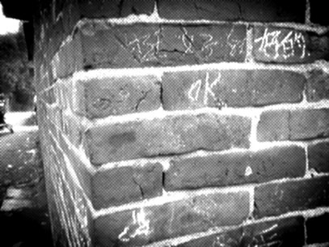
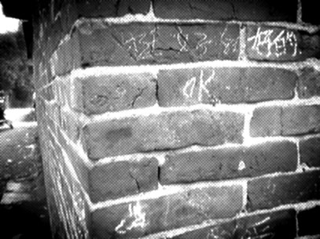
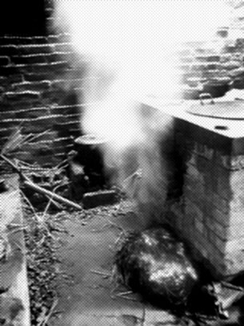
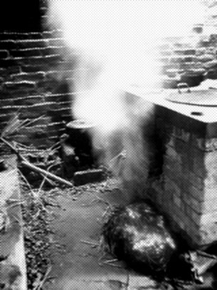

As Time Goes By
3/8/2006 7:33:39 PM

传一辑照片，农历新年的时候在故乡拍得。
都是一些老老旧旧得东西，也不晓得经历过多少岁月。
正如我Space的名字，As Time Goes By。
随着时光的流逝，很多的曾经变成了永恒，也有很多的永恒变成了曾经。
守候着明天的我们，是否守候着我们的曾经，守候着我们的永恒？
故乡的路，故乡的老房子，故乡的门...
那比我古老很多很多的一草一木，仿佛有很多很多的话要和我说。
只是不屑我们的无知，不屑我们的渺小。
因为那是一种见证，一种只有岁月可以磨练出来的成熟。
沧海桑田，It‘s the magic of time.


 
 



俏 徐 - 3/9/2006 4:13:36 PM